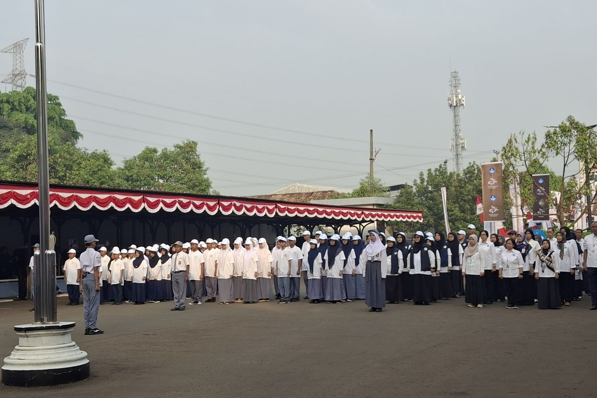
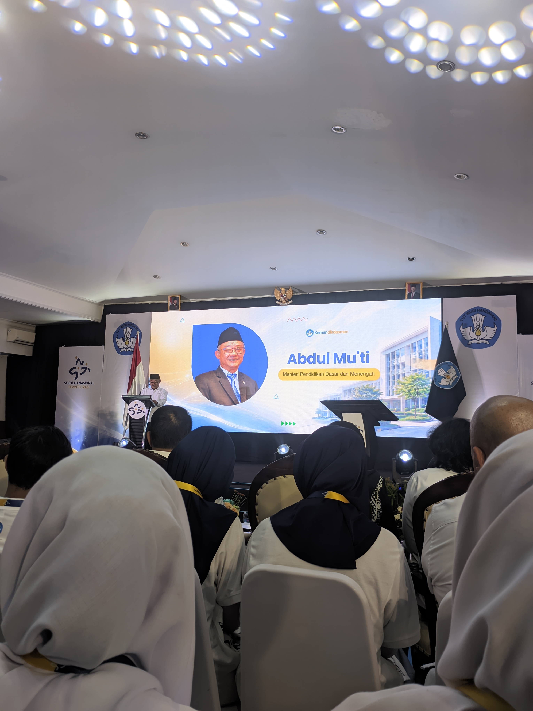
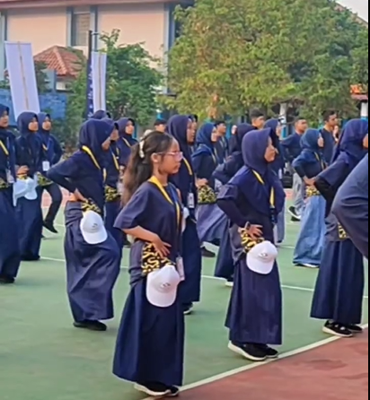
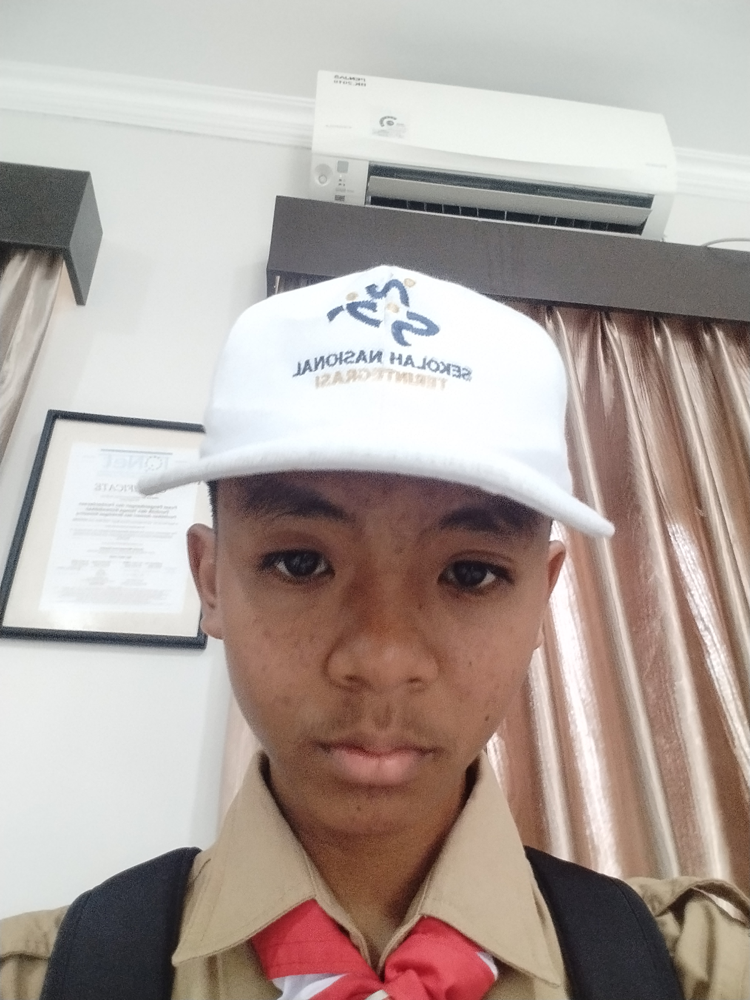
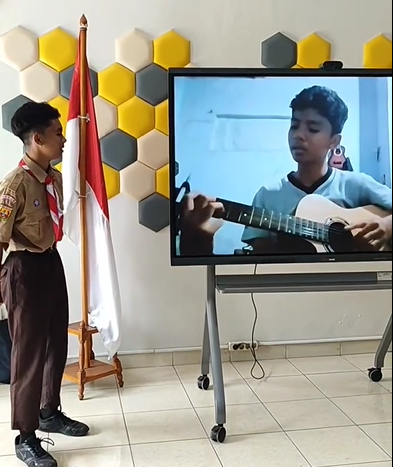
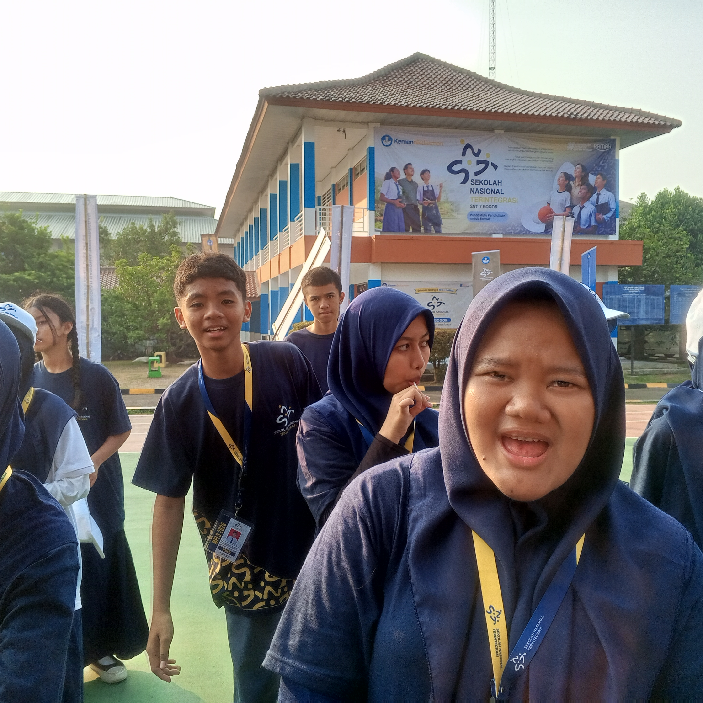
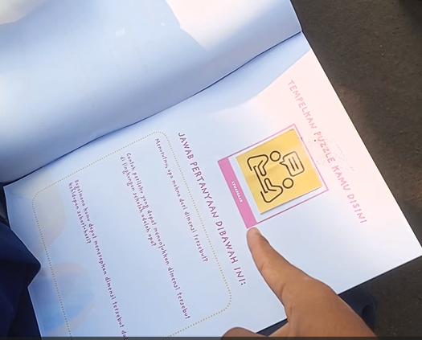
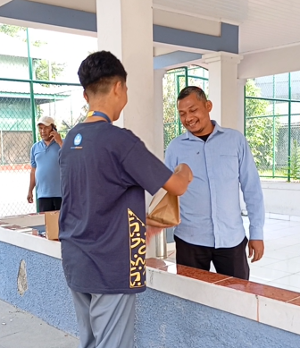
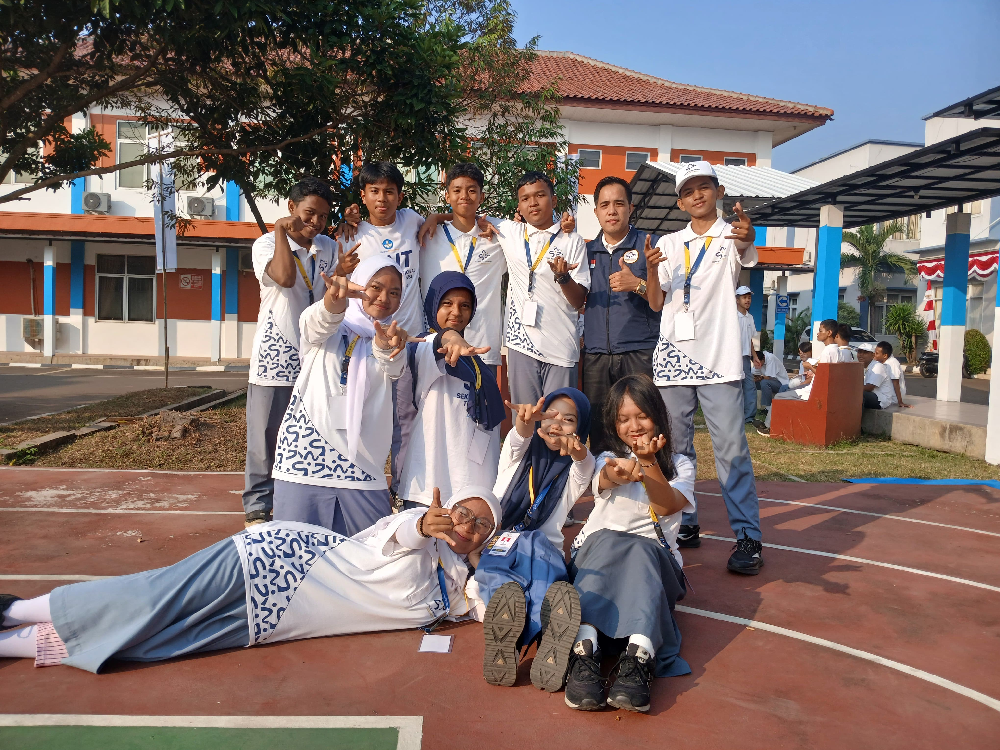
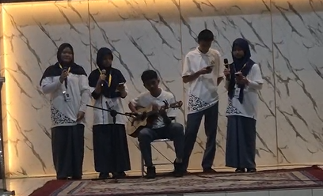

Senin, 10 Agustus 2026
📌 Kegiatan yang Dilakukan
- Upacara pembukaan MPLS dan penyematan tanda peserta secara simbolis.
- Dihadiri Menteri Pendidikan Dasar Dan Menengah serta Pejabat Negara lainnya
- Mencoba metode belajar baru menggunakan PID, Laptop dan website
✨ Kesan & Momen Seru
Seneng banget bisa jadi petugas upacara pembukaan MPLS SNT 07 Bogor. Bertemu dengan Pak Menteri, Abdul Mu'ti, Serta mengikuti acara pembukaan MPLS SNT 07 Bogor bersama pejabat lainnya
📸 Dokumentasi



Selasa, 11 Agustus 2026
📌 Kegiatan yang Dilakukan
- Masuk kelas dan diberikan tata cara menghitung denyut nadi
- Menuju ke lapangan Voli untuk melakukan Senam pagi bersama
- Menghitung denyut nadi selama 15 detik setelah selesai senam
✨ Kesan & Momen Seru
Seneng banget,bisa senam bersama dengan gembira dan suka cita. Setelah itu menghitung denyut nadi kita selama 15 detik.
📸 Dokumentasi

Rabu, 12 Agustus 2026
📌 Kegiatan yang Dilakukan
- Berbaris rapi dan menuju ke lapangan untuk melakukan kegiatan Apel pagi
- Menuju ke lapangan futsal dan badminton untuk berolahraga
- Presentasi minat dan bakat siswa
✨ Kesan & Momen Seru
Hari ini seru banget nget nget....Karena hari ini, saya bisa merasakan rasanya bermain bola di lapangan futsal, dan bermain dengan anak anak yang lain.
📸 Dokumentasi



Kamis, 13 Agustus 2026
📌 Kegiatan yang Dilakukan
- Good Vibes, Good Deeds
- Bermain Treasure hunt, mencari kertas tersembunyi yang harus ditemukan (Good Vibes)
- Membagikan barang kepada warga SNT dengan tulus dan ikhlas (Good Deeds)
✨ Kesan & Momen Seru
SERUU BANGETT AOKWOAKWOKAO...Mencari treasure dan berbagi ke warga SNT. Pelajaran yang saya dapat adalah "Saya belajar untuk lebih peduli dan mau berbagi dengan orang lain. Meskipun sederhana, dapat membantu dan memberikan manfaat.".
📸 Dokumentasi



Jumat, 14 Agustus 2026
📌 Kegiatan yang Dilakukan
- Lomba Si buta dan Si tuli, Bola keranjang, dan Berurutan angka
- Unjuk Karya : SNT Got Talent setiap kelompok
- Penutupan MPLS
✨ Kesan & Momen Seru
Gak kerasa udh last day MPLS. Seru bangetttt, bisa ikut lomba dan unjuk karya. Saya senang bisa menampilkan karya bermain gitar saya di depan teman teman dan guru guru SNT. Saya juga senang bisa melihat teman teman lain menampilkan karya mereka.
📸 Dokumentasi


